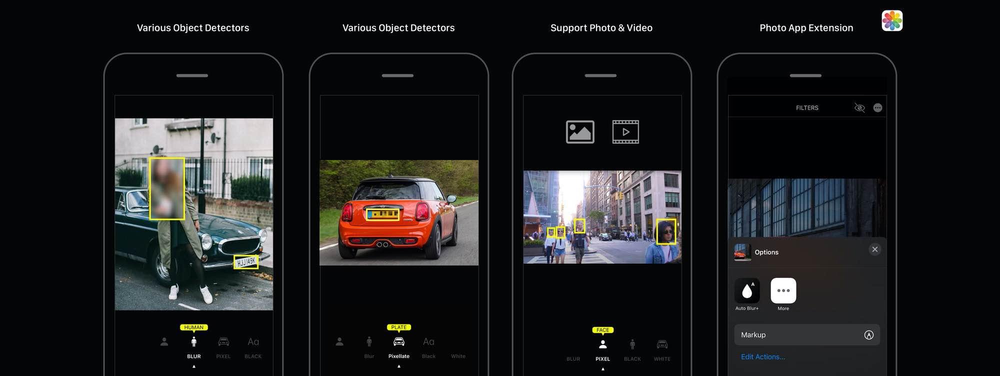
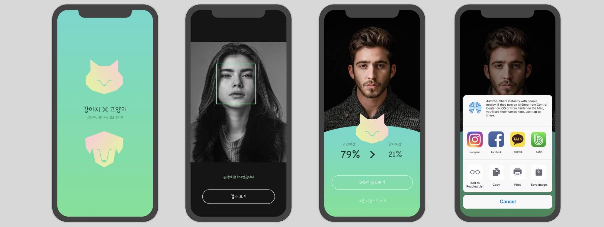
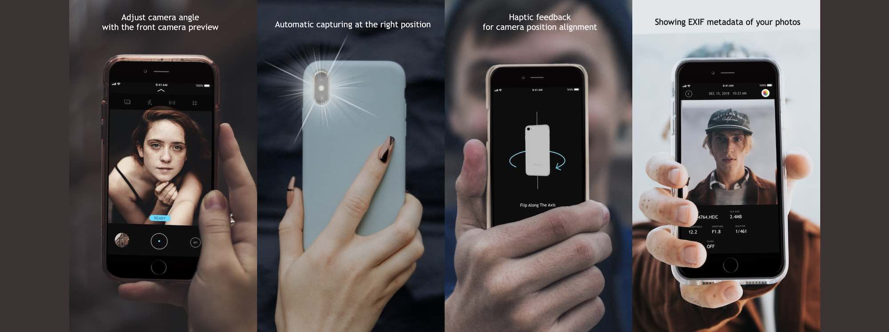
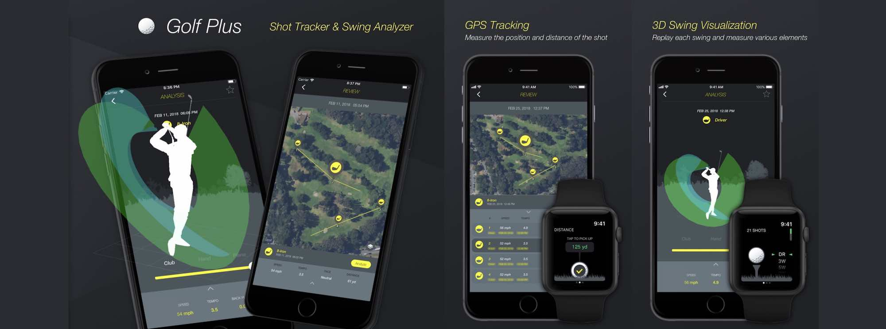
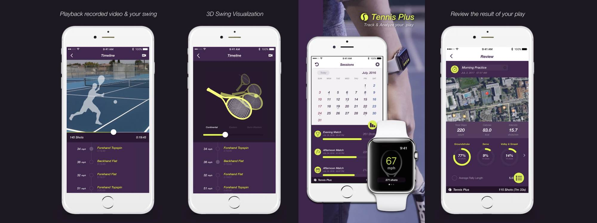

// Application SW
CodeTree 2022.
심플하고 유려한 소스 코드 뷰어 앱
__ WebView 및 JavaScript를 이용한 코드 테마 기능 적용 __ GitHub 로그인 및 Private 저장소 접근 기능 __ Xcode 프로젝트 지원 __ SwiftUI 기반 아이폰 / 아이패드 유니버셜 앱
#swift #ios #swiftui #webview #javascript

Auto Blur 2020.
이미지 & 동영상 프라이버시 보호를 위한 머신러닝 자동 블러 앱
__ CorlML을 이용한 오브젝트 인식 모델 제작 __ Metal을 이용한 이미지 및 비디오 블러 효과 성능 향상 __ iOS PhotoEditing Extension 적용 __ 아이폰 및 아이패드 유니버셜 앱 디자인
#swift #ios #vision #machinelearing #metal
Cat X Dog 2019.
머신러닝 알고리즘 강아지상 고양이상 분류 앱
__ OpenFace와 scikit-learn을 이용한 얼굴상 분류 모델 제작 __ Vision Framework을 이용한 Face Alignment 구현 __ iOS 및 Android(예정) 플랫폼 모두 개발 __ 구글 애드몹 배너 및 전면 광고 적용
#swift #ios #vision #machinelearing #python
Flip Camera 2018.
Selfie Camera 모션 인식 고화질 후면 셀카 앱
__ CoreMotion을 이용한 모션 촬영 기능 구현 __ AVFoundation을 이용한 고화질 고속연사 기능 구현 __ 간단한 사진 편집 및 EXIF 정보 출력 기능
#swift #ios #coremotion #avfoundation #haptic #ui
Golf Plus 2017.
Swing Analyzer 골프 스윙 분석 및 시각화 앱
__ CoreMotion과 SceneKit을 이용한 스윙 궤적 3D 시각화 __ CoreLocation, MapKit을 통한 샷 위치 및 거리 기록 기능 제공 __ 골프 클럽 별 샷 목록 관리 기능 제공 __ 9to5Mac에서 Apple Watch의 피트니스 기능을 극대화 해주는 앱으로 평가 ↵
#swift #ios #watchos #coremotion #scenekit #ui
Tennis Plus 2016.
Tennis Tracker 테니스 스윙 트래킹 및 분류 앱
__ CoreML 머신러닝을 이용한 테니스 스윙 동작 분류 __ 촬영된 동영상과 인식된 스윙을 싱크하는 기능 제공 __ 스윙 통계, iCloud 백업 등 다양한 기능 제공 __ Urban Wearables 에서 가장 진보한 Apple Watch용 테니스 앱으로 리뷰 ↵
#swift #ios #watchos #coremotion #machinelearing #ui
